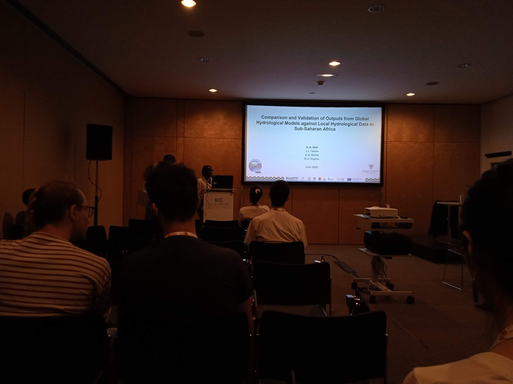

12
Major African river basins
Doctoral research · Rhodes University
When water datasets disagree, what should we trust?
Major African river basins
Hydrological studies analysed
Evidence systems compared
Hydrology, 2021–2026
Doctoral research at the Institute for Water Research examined how data availability, uncertainty and modelling choices shape African water evidence — especially in data-scarce environments.
The work compared global hydrological models, reanalysis, Earth observation and locally derived information, then developed an evidence-triangulation framework for limited or conflicting sources.
Method

Scientific African · 2020
IJPSS · 2019
IAHS · 2023
SEI · 2024